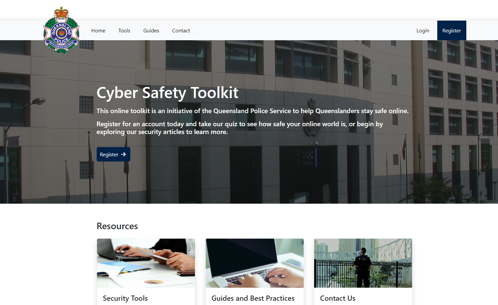
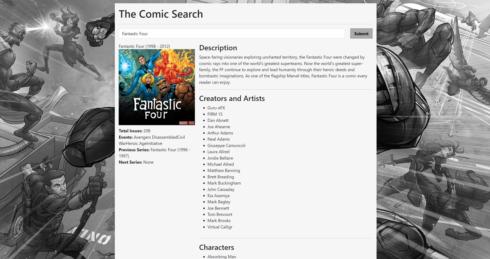
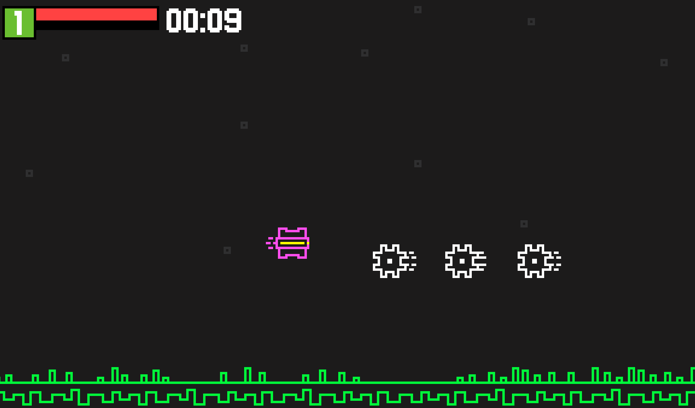

I am an aspiring Data Analyst and/or Data, who has successfully completed a Bachelors Degree of Information Technology majoring in Computer Science.
After completing university I have continued to develop my skills learning different disciplines within my field of study, and have begun to focus on Data Analytics due to my interests in the field.
This has allowed me to continue to hone my skills with MySQL and Python, but also develop new skills with technology such as PowerBI and Tableu.

A website designed to help provide guides and tutorials for people, in an easy to understand format.
The goal of the toolkit is to help improve the general publics online awareness to cyberthreats and tools to reduce that risk.
This was completed as part of a Capstone Group Project at QUT.
A Data Cleaning project using a dataset for employee layoffs from companies in different industries. This dataset was used to develop skills on making the data consistent,
removing nulls, duplicate rows and input errors.
In guidance with Alex The Analyst data analyst course.

A mashup project talking to multiple different APIS to create a Wiki-styled web application that will give information about the users favourite comic series.
Made using React, Node and AWS to practice using Docker Containers.
A calorie calculator application using the Mifflin-St Jeor Equation to give an estimated calorie intake per day to lose, maintain or gain weight.
A small project to learn how to create cross-platform Mobile Applications using Flutter.

A side scrolling shoot-em up project made in Gamemaker Studio, where the player has to survive for a total of 10 minutes of enemies and fight the final mother ship to win.
Collect experience to level up and choose from an array of powerup options to fight off the ships.

An arena survival gamemode built within the Warcraft 3 engine, where the player can choose from multiple heroes and fight onslaughts of enemies, collecting loot, and choosing from powerful skills.